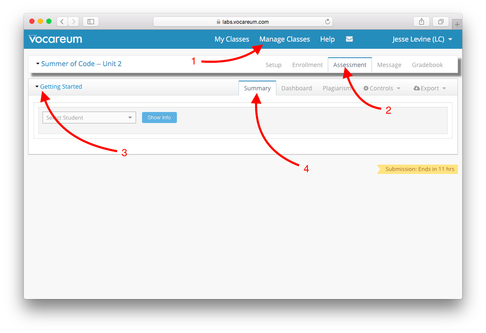
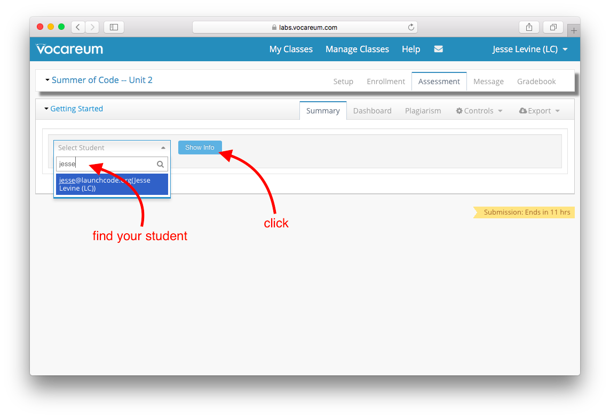
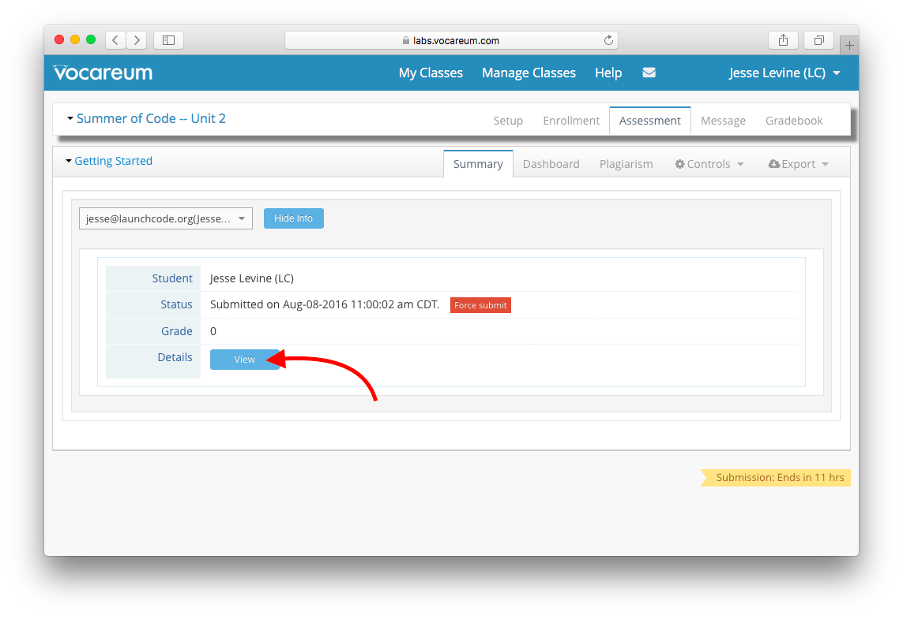
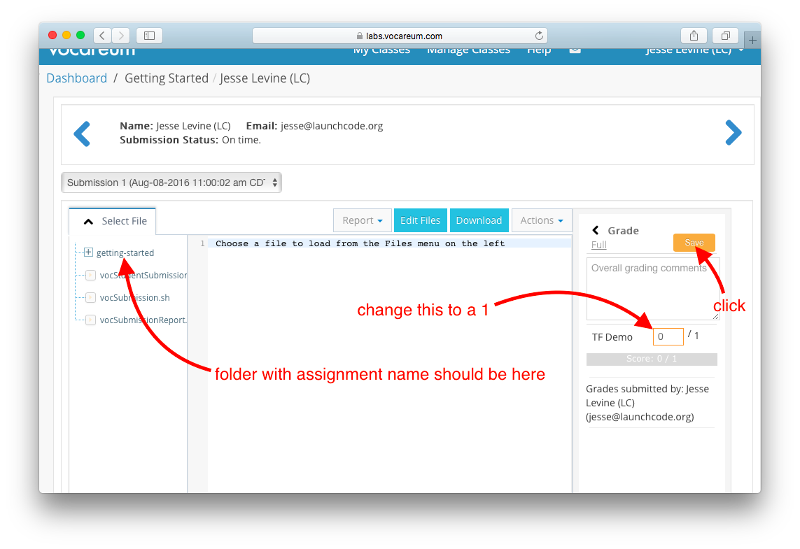

How to Grade a Student's Demo
The Procedure:
- Inspect the project . . . from the user's perspective. You don't need to look at the source code. For example, with the Getting Started assignment, they should pull up their page in a browser and you should see their name. On a more complicated assignment, we might provide you a checklist of requirements. If we don't give you a checklist, then just try to reasonably make one up yourself. Obviously if the student's code does not pass the requirements, you should tell them "I'm not ready to give you credit yet because . . . "
- Find the student's submission on Vocareum. The student is required to submit their assignment by cloning their project repository down from GitHub into Vocareum. On Vocareum you should see that their
work/directory contains a folder with the name of the assignment. If such a folder does not exist, reject them and tell them they need to submit their code. - Look at their code (sometimes). There might be some assignments for which the requirements include certain things about the code, e.g. "Student must use a for-loop". If so, then check those things as well.
- Give them credit. If all is well, then go ahead and give them a 1 out of 1 on the criterion called TF Demo, and click the Save button.
Vocareum Walkthrough (with pictures!)
- Navigate to the appropriate assignment. 
- Find your student. 
- Look at their submission. 
- Give them credit. 